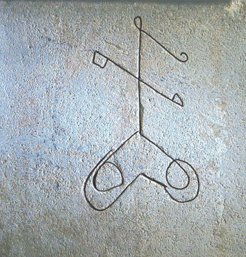
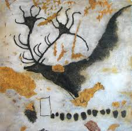
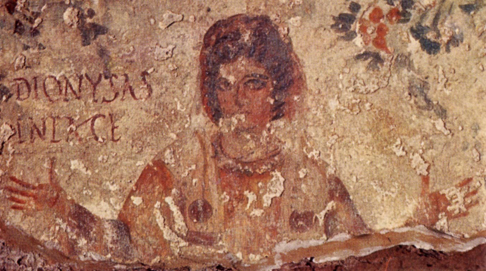

A graffito (plural "graffiti"), in an archaeological context, is a deliberate mark made by scratching or engraving on a large surface such as a wall. The marks may form an image or writing. The term is not usually used of the engraved decoration on small objects such as bones, which make up a large part of the Art of the Upper Paleolithic, but might be used of the engraved images, usually of animals, that are commonly found in caves, though much less well known than the cave paintings of the same period; often the two are found in the same caves. In archaeology, the term may or may not include the more common modern sense of an "unauthorised" addition to a building or monument. Sgraffito, a decorative technique of partially scratching off a top layer of plaster or some other material to reveal a differently colored material beneath, is also sometimes known as "graffito".
Modern knowledge of the history of Ancient Egypt was originally derived from inscriptions, literature, (Books of the Dead), pharaonic historical records, and reliefs, from temple statements, from and numerous individual objects whether pharaonic or for the Egyptian citizenry. Twentieth century developments led to finding less common sources of information indicating the intricacies of the interrelationships of the pharaoh, his appointees, and the citizenry.
Three minor sources have helped link the major pieces of interrelationships in Ancient Egypt: ostraca, scarab artifacts, and numerous temple, quarry, etc. sources have helped fill in minor pieces of the complex dealings in Ancient Egypt. The reliefs, and writings with the reliefs, are often supplemented with a graffito, often in hieratic and discovered in locations not commonly seen, like a doorjamb, hallway, entranceway, or the side or reverse of an object.
Large quantities of graffiti have been found in Athens during excavations by the American School of Classical Studies at Athens; nearly 850 were catalogued by Mabel Lang in 1976.[2] These include a variety of different types of graffiti, such as abecedaria, kalos inscriptions, insults, marks of ownership, commercial notations, dedications, Christian inscriptions, messages, lists and pictures. They date from the eighth century BC through to the late Roman period.
